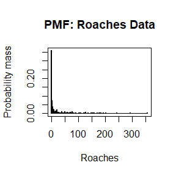
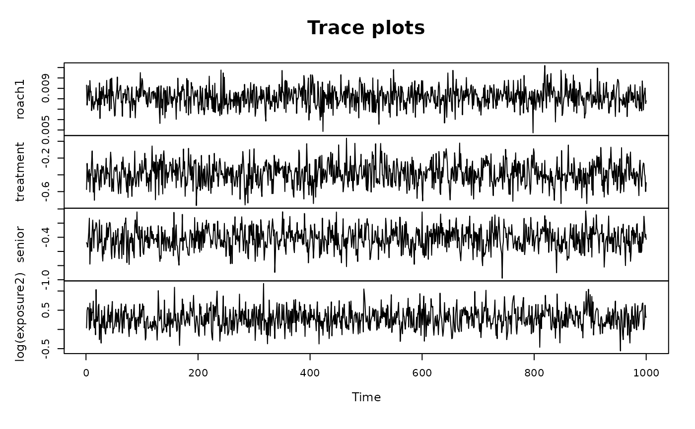
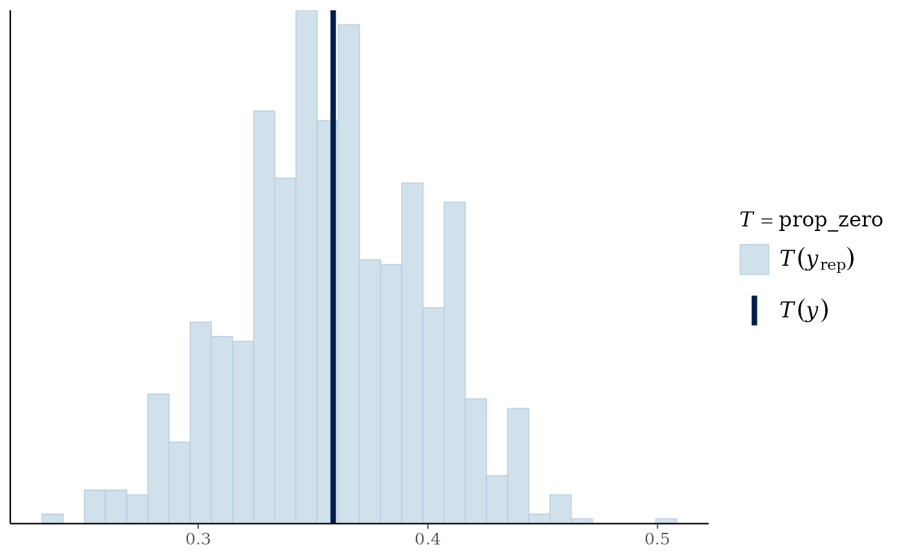
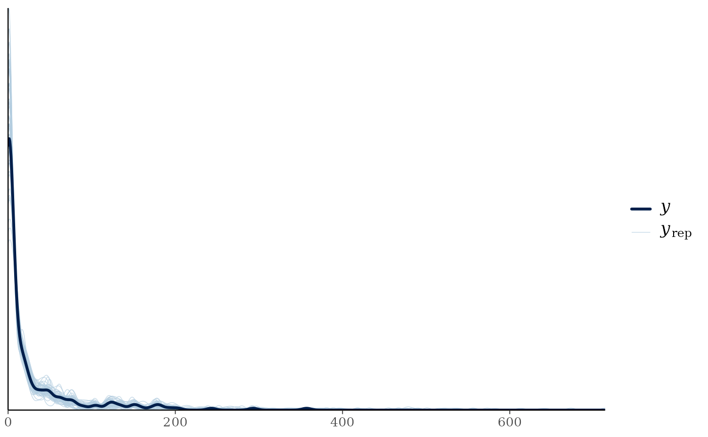
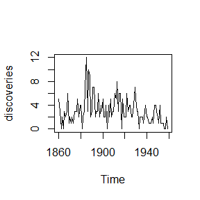
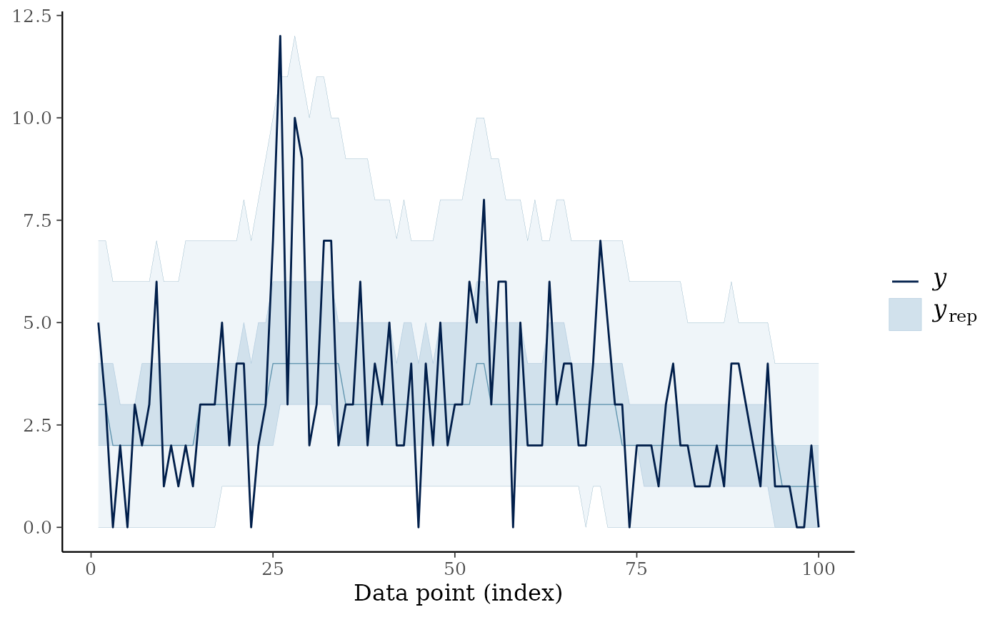

Introduction
The countSTAR package implements a variety of methods to
analyze count data, all based on Simultaneous Transformation and
Rounding (STAR) models. The package functionality is broadly split into
three categories: frequentist/classical estimation (Kowal and Wu (2021)), Bayesian modeling
and prediction (Kowal and Canale (2020); Kowal
and Wu (2022)), and time
series analysis and forecasting (King and Kowal
(2023)).
We give a brief description of the STAR framework, before diving into
specific examples that show the countSTAR
functionality.
STAR Model Overview
STAR models build upon continuous data models to provide a valid count-valued data-generating process. As a motivating example, consider the common practice of taking log- or square-root transformations of count data and then applying continuous data models (e.g., Gaussian or OLS regressions). This approach is widely popular because it addresses the skewness often found in count data and enables use of familiar models, but it does not provide a valid count data distribution. STAR models retain the core components—the transformation and the continuous data model—but add in a rounding layer to ensure a coherent, count-valued data-generating process. For example: The transformation and continuous data model are not applied directly to the observed counts , but rather to a latent “continuous proxy” . The (latent) continuous data model is linked to the (observed) count data via a coarsening operation. This is not the same as rounding the outputs from a fitted continuous data model: the discrete nature of the data is built into the model itself, and thus is central in estimation, inference, and prediction.
More generally, STAR models are defined via a rounding
operator
,
a (known or unknown) transformation
,
and a continuous data model with unknown parameters
:
usually with
.
Examples of
include linear, additive, and tree-based regression models. The
regression model may be replaced with a time series model (see
warpDLM(), discussed below) or other continuous data
models.
STAR models are highly flexible models and provide the capability to model count (or rounded) data with challenging features such as
- zero-inflation
- over- or under-dispersion
- bounded or censored data
- heaping or multi-modality
all with minimal user inputs and within a regression (or time series) context.
The Rounding Operator
The rounding operator
is a many-to-one function (or coarsening) that sets
whenever
or equivalently when
.
The floor function
works well as a default, with modifications for lower and upper
endpoints. First,
ensures that
whenever
.
Much of the latent space is mapped to zero, which enables STAR models to
account for zero-inflation. Similarly, when there is a known (finite)
upper bound y_max for the data, we fix
,
so STAR models can capture endpoint inflation. In fact, because of the
coarsening nature of STAR models, they equivalently can be applied for
count data that are bounded or censored at y_max
without any modifications (Kowal and Canale (2020)). From the user’s perspective,
only y_max needs to be specified (if finite).
The Transformation Function
There are a variety of options for the transformation function , ranging from fixed functions to data-driven estimates to fully Bayesian (nonparametric) models for the transformation.
First, all models in countSTAR support three fixed
transformations: log, sqrt, and
identity (essentially a rounding-only model). In these
cases, the STAR model has exactly the same number of unknown parameters
as the (latent) continuous data model. Thus, it gives a parsimonious
adaptation of continuous data models to the count data setting.
Second, most functions support a set of transformations that are estimated by matching marginal moments of the data to the latent :
-
transformation='np'is a nonparametric transformation estimated from the empirical CDF of -
transformation='pois'uses a moment-matched marginal Poisson CDF -
transformation='neg-bin'uses a moment-matched marginal Negative Binomial CDF.
Details on the estimation of these transformations can be found in
Kowal and Wu (2021). The nonparametric
transformation np is effective across a variety of
empirical examples, so it is the default for frequentist STAR methods.
The main drawback of this group of transformations is that, after being
estimated, they are treated as fixed and known for estimation and
inference of
.
Of course, this drawback is limited when
is large.
Finally, Bayesian STAR methods enable joint learning of the transformation along with the model parameters . Thus, uncertainty about the transformation is incorporated into all downstream estimation, inference, and prediction. These include both nonparametric and parametric transformations:
-
transformation='bnp': the transformation is modeled using Bayesian nonparametrics, and specifically via a Dirichlet process for the marginal outcome distribution, which incorporates uncertainty about the transformation into posterior and predictive inference. -
transformation='box-cox': the transformation is assumed to belong to the Box-Cox family; the parameter can be fixed or learned. -
transformation='ispline': the transformation is modeled as an unknown, monotone function using I-splines. The Robust Adaptive Metropolis (RAM) sampler is used for the unknown transformation .
The transformation bnp is the default for all applicable
Bayesian models. It is nonparametric, which provides substantial
distributional flexible for STAR regression, and is remarkably
computationally efficient—even compared to parametric alternatives. This
approach is inspired by Kowal and Wu (2025).
For any countSTAR function, the user can see which
transformations are supported by checking the appropriate help page,
e.g., ?blm_star().
Count-Valued Data: The Roaches Dataset
As an example of challenging count-valued data, consider the
roaches data from Gelman and Hill
(2006). The response
variable,
,
is the number of roaches caught in traps in apartment
,
with
.
data(roaches, package="countSTAR")
# Roaches:
y = roaches$y
# Plot the PMF:
plot(0:max(y),
sapply(0:max(y), function(js) mean(js == y)),
type='h', lwd=2, main = 'PMF: Roaches Data',
xlab = 'Roaches', ylab = 'Probability mass')
There are several notable features in the data:
- Zero-inflation: 36% of the observations are zeros.
- (Right-) Skewness, which is clear from the histogram and common for (zero-inflated) count data.
- Overdispersion: the sample mean is 26 and the sample variance is 2585.
A pest management treatment was applied to a subset of 158 apartments, with the remaining 104 apartments receiving a control. Additional data are available on the pre-treatment number of roaches, whether the apartment building is restricted to elderly residents, and the number of days for which the traps were exposed. We are interested in modeling how the roach incidence varies with these predictors.
# Design matrix:
X = model.matrix( ~ roach1 + treatment + senior + log(exposure2),
data = roaches)
head(X)
#> (Intercept) roach1 treatment senior log(exposure2)
#> 1 1 308.00 1 0 -0.2231436
#> 2 1 331.25 1 0 -0.5108256
#> 3 1 1.67 1 0 0.0000000
#> 4 1 3.00 1 0 0.0000000
#> 5 1 2.00 1 0 0.1335314
#> 6 1 0.00 1 0 0.0000000Frequentist inference for STAR models
Frequentist (or classical) estimation and inference for STAR models
is provided by an EM algorithm. Sufficient for estimation is an
estimator function which solves the least squares (or
Gaussian maximum likelihood) problem associated with
—or
in other words, the estimator that would be used for Gaussian
or continuous data. Specifically, estimator inputs data and
outputs a list with two elements: the estimated
coefficients
and the fitted.values
.
countSTAR includes implementations for linear, random
forest, and generalized boosting regression models (see below), but it
is straightforward to incorporate other models via the generic
genEM_star() function.
The STAR Linear Model
For many cases, the STAR linear model is the first method to try: it
combines a rounding operator
,
a transformation
,
and the latent linear regression model
In countSTAR,
the (frequentist) STAR linear model is implemented with
lm_star() (see blm_star() for a Bayesian
version). lm_star() aims to mimic the functionality of
lm by allowing users to input a formula. Standard functions
like coef and fitted can be used on the output
to extract coefficients and fitted values, respectively.
library(countSTAR)
# EM algorithm for STAR linear regression
fit = lm_star(y ~ roach1 + treatment + senior + log(exposure2),
data = roaches,
transformation = 'np')
# Fitted coefficients:
round(coef(fit), 3)
#> (Intercept) roach1 treatment senior log(exposure2)
#> 0.035 0.006 -0.285 -0.321 0.216Here the frequentist nonparametric transformation was used, but other
options are available; see ?lm_star() for details.
Based on the fitted STAR linear model, we may further obtain
confidence intervals for the estimated coefficients using
confint():
# Confidence interval for all coefficients
confint(fit)
#> 2.5 % 97.5 %
#> (Intercept) -0.139711518 0.199942615
#> roach1 0.004898573 0.007468304
#> treatment -0.488199761 -0.085641963
#> senior -0.548729134 -0.102510551
#> log(exposure2) -0.197843036 0.636935236Similarly, p-values are available using likelihood ratio tests, which can be applied for individual coefficients,
or for joint sets of variables, analogous to a (partial) F-test:
P-values for all individual
coefficients as well as the p-value for any effects are
computed with the pvals() function.
# P-values:
round(pvals(fit), 4)
#> (Intercept) roach1 treatment senior
#> 0.6973 0.0000 0.0056 0.0049
#> log(exposure2) Any linear effects
#> 0.3072 0.0000Finally, we can get predictions at new data points (or the training
data) using predict().
#Compute the predictive draws (just using observed points here)
y_pred = predict(fit)For predictive distributions, blm_star() and other
Bayesian models are recommended.
STAR Machine Learning Models
countSTAR also includes STAR versions of machine
learning models: random forests (randomForest_star()) and
generalized boosted machines (gbm_star()). These refer to
the specification of the latent regression function
along with the accompanying estimation algorithm for continuous data.
Here, the user directly inputs the set of predictors
alongside any test points in
,
excluding the intercept:
#Fit STAR with random forests
suppressMessages(library(randomForest))
fit_rf = randomForest_star(y = y, X = X[,-1], # no intercept
transformation = 'np')
#Fit STAR with GBM
suppressMessages(library(gbm))
fit_gbm = gbm_star(y = y, X = X[,-1], # no intercept
transformation = 'np')For all frequentist models, the functions output log-likelihood values at the MLEs, which allows for a quick comparison of model fit.
#Look at -2*log-likelihood
-2*c(fit_rf$logLik, fit_gbm$logLik)
#> [1] 1666.783 1593.495In general, it is preferable to compare these fits using
out-of-sample predictive performance. Point predictions are available
via the named components fitted.values or
fitted.values.test for in-sample predictions at
or out-of-sample predictions at
,
respectively.
Bayesian inference for STAR models
Bayesian STAR models only require an algorithm for (initializing and) sampling from the posterior distribution under a continuous data model. In particular, the most convenient strategy for posterior inference with STAR is to use a data-augmentation Gibbs sampler, which combines that continuous data model sampler with a draw from the latent data posterior, , which is a truncated (Gaussian) distribution. For special cases of Bayesian STAR models, direct Monte Carlo (not MCMC) sampling is available.
Efficient algorithms are implemented for several popular Bayesian
regression and time series models (see below). The user may also adapt
their own continuous data models and algorithms to the count data
setting via the generic function genMCMC_star().
Bayesian STAR Linear Model
Revisiting the STAR linear model, the Bayesian version places a prior
on
.
The default in countSTAR is Zellner’s g-prior, which has
the most functionality, but other options are available (namely,
horseshoe and ridge priors). The model is estimated using
blm_star(). Note that for the Bayesian models in
countSTAR, the user must supply the design matrix
(and if predictions are desired, a matrix of predictors at the test
points). We apply this to the roaches data, now using the default
Bayesian nonparametric transformation:
fit_blm = blm_star(y = y, X = X,
transformation = 'bnp')In some cases, direct Monte Carlo (not MCMC) sampling can be
performed (see Kowal and Wu (2022) for details): simply set
use_MCMC=FALSE. Although it is appealing to avoid MCMC, the
output is typically similar and the Monte Carlo sampler requires
truncated multivariate normal draws, which become slow for
large
.
Posterior expectations and posterior credible intervals from the model are available as follows:
# Posterior mean of each coefficient:
round(coef(fit_blm),3)
#> (Intercept) roach1 treatment senior log(exposure2)
#> 0.316 0.008 -0.388 -0.420 0.284
# Credible intervals for regression coefficients
ci_all_bayes = apply(fit_blm$post.beta,
2, function(x) quantile(x, c(.025, .975)))
# Rename and print:
rownames(ci_all_bayes) = c('Lower', 'Upper')
print(t(round(ci_all_bayes, 3)))
#> Lower Upper
#> (Intercept) 0.020 0.605
#> roach1 0.006 0.010
#> treatment -0.648 -0.122
#> senior -0.717 -0.127
#> log(exposure2) -0.220 0.831We can check standard MCMC diagnostics:
# MCMC diagnostics for posterior draws of the regression coefficients (excluding intercept)
plot(as.ts(fit_blm$post.beta[,-1]),
main = 'Trace plots', cex.lab = .75)
# (Summary of) effective sample sizes (excluding intercept)
suppressMessages(library(coda))
getEffSize(fit_blm$post.beta[,-1])
#> Min. 1st Qu. Median Mean 3rd Qu. Max.
#> 676.2 736.1 759.6 798.8 822.3 1000.0We may further evaluate the model based on posterior diagnostics and posterior predictive checks on the simulated versus observed proportion of zeros. Posterior predictive checks are easily visualized using the bayesplot package.
# Posterior predictive check using bayesplot
suppressMessages(library(bayesplot))
prop_zero = function(y) mean(y == 0)
ppc_stat(y = y,
yrep = fit_blm$post.pred,
stat = "prop_zero")
BART STAR
One of the most flexible model options is to use Bayesian Additive Regression Trees (BART; Chipman, George, and McCulloch (2012)) as the latent regression model. Here, is a sum of many shallow trees with small (absolute) terminal node values. BART-STAR enables application of BART models and algorithms for count data, thus combining the regression flexibility of BART with the (marginal) distributional flexibility of STAR:
fit_bart = bart_star(y = y, X = X,
transformation = 'np')
#> [1] "1 sec remaining"
#> [1] "Total time: 2 seconds"Since bnp is not yet implemented for
bart_star(), we use np here. The
transformation is still estimated nonparametrically, but then is treated
as fixed and known (see 'ispline' for a fully Bayesian and
nonparametric version, albeit slower).
Once again, we can perform posterior predictive checks. This time we plot the densities:
ppc_dens_overlay(y = y,
yrep = fit_bart$post.pred[1:50,])
Pointwise log-likelihoods and WAIC values are outputted for model comparison. Using this information, we can see the BART STAR model seems to have a better fit than the linear model:
Other Bayesian Models
To estimate a nonlinear relationship between a (univariate) covariate
and count-valued
,
spline_star() implements a highly efficient, fully Bayesian
spline regression model.
For multiple nonlinear effects, bam_star() implements a
Bayesian additive model with STAR. The user specifies which covariates
should be modeled linearly and which should be modeled nonlinearly via
splines. Note that bam_star() can be slower than
blm_star() or bart_star().
Count Time Series Modeling: warpDLM
Up to this point, we have focused on static regression where the data does not depend on time. Notably, King and Kowal (2023) extended STAR to the time series setting by incorporating a powerful time series framework known as Dynamic Linear Models (DLMs). A DLM is defined by two equations: (i) the observation equation, which specifies how the observations are related to the latent state vector and (ii) the state evolution equation, which describes how the states are updated in a Markovian fashion. More concretely, and using subscripts for time: for , where are mutually independent and .
Of course, given the Gaussian assumptions of the model, a DLM alone is not appropriate for count data. Thus, a warping operation—combining the transformation and rounding—is merged with the DLM, resulting in a warped DLM (warpDLM):
The DLM form shown earlier is very general. Among these DLMs,
countSTAR currently implements the local level model and
the local linear trend model. A local level model (also known as a
random walk with noise model) has a univariate state
with
The local linear trend
model extends the local level model by incorporating a time varying
drift
in the dynamics:
This can in turn be recast
into the general two-equation DLM form. Namely, if we let
,
the local linear trend is written as
These two common forms have a long history and are also referred to
as structural time series models (implemented in base R via
StructTS()). With countSTAR, warpDLM time
series modeling is accomplished via the warpDLM() function.
In the below, we apply the model to a time series dataset included in
base R concerning yearly numbers of important discoveries from 1860 to
1959 (?discoveries for more information).
#Visualize the data
plot(discoveries)
# Required package:
library(KFAS)
#> Please cite KFAS in publications by using:
#>
#> Jouni Helske (2017). KFAS: Exponential Family State Space Models in R. Journal of Statistical Software, 78(10), 1-39. doi:10.18637/jss.v078.i10.
#Fit the model
warpfit = warpDLM(y = discoveries, type = "trend")
#> [1] "Time taken: 31.846 seconds"Once again, we can check fit using posterior predictive checks. The median of the posterior predictive draws can act as a sort of count-valued smoother of the time series.
ppc_ribbon(y = as.vector(discoveries),
yrep = warpfit$post_pred)